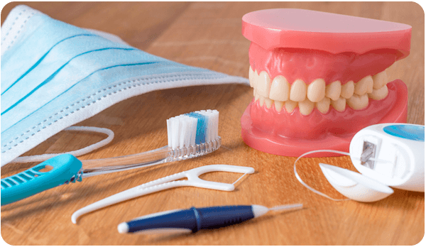
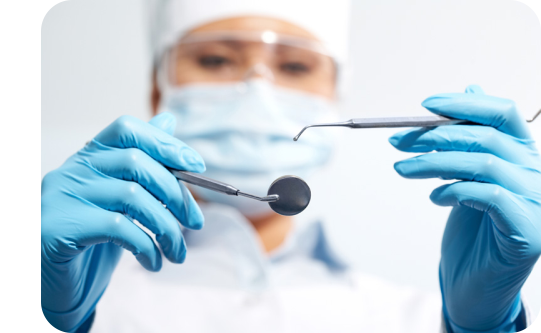
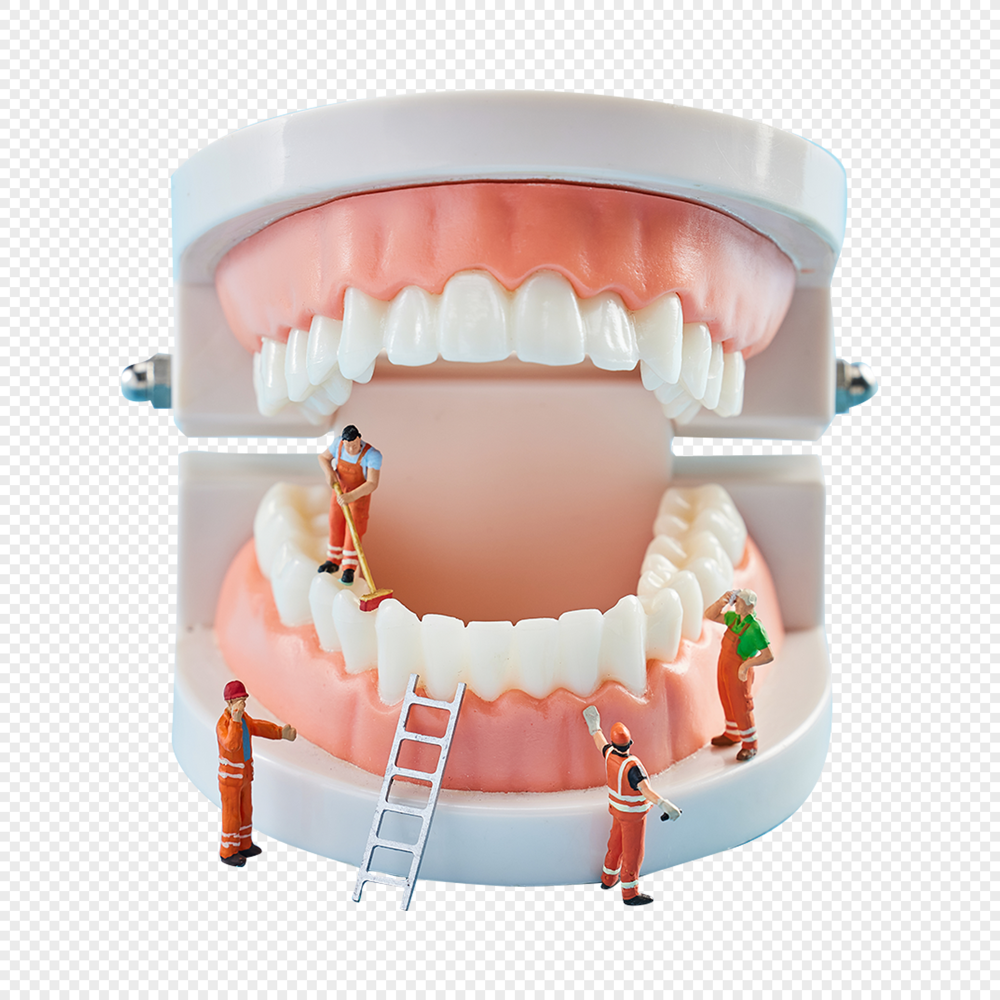

Introdução
Um sorriso bonito e saudável é muito mais do que apenas estética. A saúde bucal está diretamente ligada à saúde geral do corpo, influenciando desde a nossa autoestima até a prevenção de doenças mais graves. Este projeto tem como objetivo conscientizar a população sobre a importância de cuidar da saúde bucal e oferecer informações práticas para uma vida bucal mais saudável.
A importância da higiene bucal
Conclusão
Cuidar da saúde bucal é um investimento para uma vida mais saudável e feliz. Com hábitos simples e regulares, podemos prevenir doenças bucais e garantir um sorriso bonito e duradouro. Este projeto busca ser um guia para todos aqueles que desejam ter uma boca saudável e um sorriso radiante.